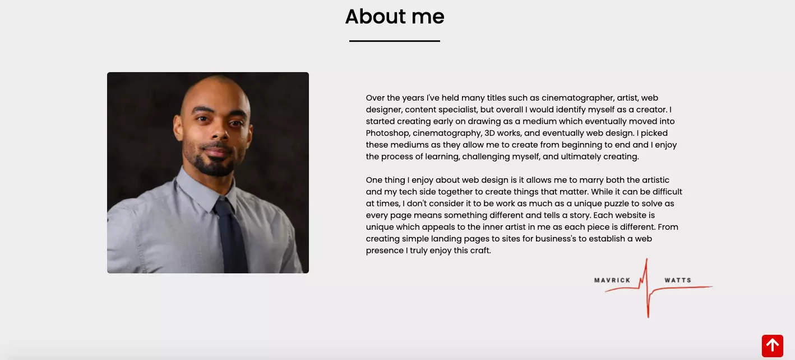

Mavrick Watts Portfolio Site
OVERVIEW
Mavrick Watts Portfolio Website was created as a portfolio site to give info about my work, skillset, and lastly about myself. The site goes in depth in the portfolio section on challenges I faced, solutions I came up with, and the technologies utilized to accomplish each project.

CHALLENGES
Some challenges that I faced with building this site where coming up with a way to show off my portfolio well, incorporating javascript into the project, and making a functioning contact me section. Ironically enough all of these issues where the same issues that I had in my first iteration of my deployed v1 of my portfolio site. Other lesser issues that I brought onto myself were researching and learning to use Agile Scrum methodology and SCSS on this project as I wanted to push myself to utilize something I didn't know in this project to simulate what might happen in an "on the job" situation. Lastly I did a little bit of digging on web optimization and adjusted all of my pictures to from png/jpg's to webp format to save on loading time.
THE SOLUTION
For the solutions to these problems I first researched what I didn't know first or needed a better understanding of which was Agile Scrum Methodology and SCSS. I Youtube'd, read, and applied what I learned and applied them to building this portfolio website. Agile Scrum methodology kept me on track and moving at a good pace while ensuring I didn't get overwhelmed by adding on too many tasks each sprint. SCSS didn't take too long to pickup and implement as I refactored my original CSS code and separated it into website section concerns.
For the remainder of the website I focused on making it fairly simplistic and straightforward making everything section based throughout the website. I wanted to focus on mobile responsiveness as in todays world thats where a lot of users will check first. For this I set out a few media queries and separated them in the SCSS for mobile, tablet, and desktop to ensure everything is viewable on all screen widths.